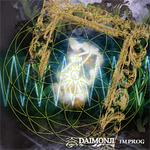

Home Artist links Label link

Daimonji - Improg
| Artist: | Daimonji |
| Title: | Improg |
| Label: | Musea FGBBG 4522.AR, Poseidon PRF-014 |
| Length(s): | 77 minutes |
| Year(s) of release: | 2003 |
| Month of review: | [01/2004] |
Line up
Hoppy Kamiyama - keyboards, vocals
Tatsuya Yoshida - drums, vocals
Nasuno Mitsunu - bass
Tracks
| 1) | Glimpse | 14.29
|
| 2) | Mongolian Bandits | 22.03 MP3
|
| 3) | Night Dust (Monosyllabic Sex) | 19.12
|
| 4) | Ombre Moned | 21.25
|
Summary
Four mile long tracks from Japan. Surprisingly enough, the booklet
mentions the website of the Japanese band Ruins. Might this band have
anything to do with that modern Zeuhl duo? And indeed, drummer
Yoshida is one the members of Ruins (he is with one Kimoto on the single
album that I have by them).
The music
The album opens with the shorty of the album, Glimpse, only fourteen
and a half
minute long. The opening shows that the name Improg was not selected
senselessly, because that is what this is about exactly: warm
meandering
vibes, fast jazzy drumming, the works. After five minutes or so, the
music
becomes more frantic and the band shows how it distinguishes itself
from the other jazzrock oriented bands that have been coming to us
from Japan. These are the Magmaesque vocals (including Klaus Basquiz
like
high pitched squeak). This alone makes the music of Daimonji very Magma
like, in fact, little or nothing distinguishes it from the real, later
Magma thing where the music was also strongly rooted in fusion.
By comparison, the music seems to me quite a bit lighter than albums
like Mekanik Destruktiw Kommandoh, but it may also be that I have grown
more used to this kind of material over the years. Halfway, the music
does become a bit darker and dissonant, a bit of Canterbury hidden in
there. I guess the vibes also help there. The meandering continues
when the freaky keyboards set in. The vocalists make it to the
finishing
line, but it is difficult to tell which of the two actually wins.
The next one up is with over twenty two minutes the longest one. The
wavery Basquiz style vocals open here, while the sound is vaguer
more psychedelic. The structure of the song hangs up in the air somewhere,
again we are treated to long improvisational elements, a bit sparser
than earlier, more directed towards spooky atmospheres.
At times, the groove and beat set in, but on the whole the song is
quite similar to the previous one.
The third one, Night Dust (Monosyllabic Sex), proceeds with lone guitar tones, long stretched,
occasional and noisy. Slowly, the pacey rock gets underway. This is
quite a bit more modern than the previous songs. The singing is
very expressive, and a lot less in the vein of Magma. It seems that
this band has transformed itself into new alternative rock band in the
line of (early) King Black Acid. The vocals are quite different though.
Later the track moves back into the direction of the first two tracks,
continuing a heavy pace and repetitive outlook on things. Some dissonance
enters the play towards the end of the song when the quick piano
runs can be quite frantic.
Given what we have heard before, you will not be very surprised
by the closer Ombre Moned. Plenty of hacking away by Yoshida
here and including some Crimsonesque guitar noise too. Plenty of
tension here too, with the bottom dropping out of the music
quite suddenly, and the instrumentalists giving way to mood.
Quite intense playing here round the fourteen minute mark,
but you do have to take account of the rather rough live sound.
The energy is there though. Around the eighteen minute mark
we get some melodic piano playing, something else again.
Conclusion
Take a large dose of Magma (including Basquizian vocals and weird
incantations), add to this the fusionish sound of later Magma and
some Canterbury to stir things up. A bit of modern psychedelic
and Crimson like adventures
may be added as final flavours. Cook this into four large pieces,
fully improvised and the result is Daimonji's Improg.
In view of the participation of Ruins' Yoshida this is maybe not so
surprising. However, do not think this is Ruins, they are
way more crazy and distinctive. On this album, improvisations
set the tone, and the sound is live (very audible in the production
too) and mainly jazzy. An album with some strong moments, but on the
whole a tad longwinded. Still, many a Magma fan will want to check this
out.
© Jurriaan Hage